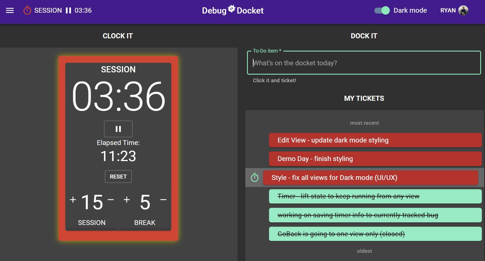

DEBUG DOCKET
Say 'Hello World' to your little friends
+ Software Bug/Issue Tracker + Time Management Tool + Developer Social Platform
Debugging is an important skill for any developer. But bugs can have a bad reputation, being costly, stress-inducing, and annoying.
I built DEBUG DOCKET to change that by approaching bugs with a growth mindset through healthy time management, helpful analytics and positive team engagement.
- Single-Page Application built utilizing React Hooks with full CRUD-functionality for tracking to-do list of bug tickets and auto-tracking time spent on each bug
- Automated timer utilizing time management Pomodoro® Technique for consecutive work/break periods with friendly reminders
- Find fellow developer colleagues and view & help with their reported bugs